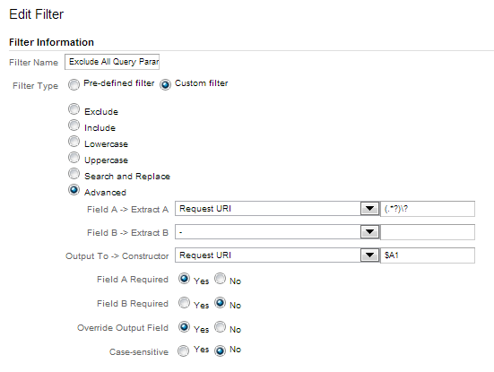
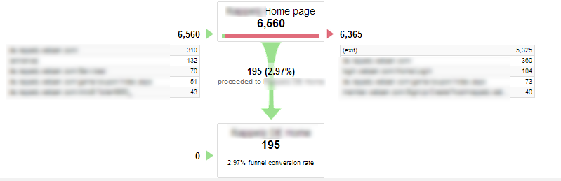

The Problem
This plan was prepared and implemented for a company that was previously tracking its domain and subdomains (about 30, in 6 different languages and markets) in different Google Analytics accounts, thus showing the following issues:
1) They could not set up funnels and goals, therefore they were not tracing conversions. Conversions patterns (account registrations) started from various subdomains and ended in a “thank you” page in the main domain
2) Traffic from subdomains to the main domain was tracked in the main domain GA account as new/returning traffic, inflating the number of visits to the site
3) Visitors who left the main domain to go to subdomains and vice versa were counted as exists or bounces
4) Google Analytics was not updated to Universal Analytics
The company was also shifting to a new domain and subdomains name on all its websites eg from www.olddomainame.com to www.newdomainame.com and from subdomain.olddomainame.com to subdomain.newdomainame.com.
Some of the company’s subdomains had up to 2 million visits per month.
Old GA settings:

The Solution
1) I created a new Account and updated it to Universal Analytics.
This also allowed to keep intact hisotical data from the old account
2) I set up sub-domain tracking to track main domain and all subdomains. I implemented the same UA code across domain and subdomains, using the company’s internal tools to place Google Analytics code in the webpages
3) I created a view for each subdomain:

5) I created an unfiltered view to collect and store raw data from all the company’s websites
6) I created a view to track conversion goals only, and added a filter to exclude all query parameters from the URLs in order to create clean reports.

7) In the Conversions Goals view, I created funnels to track several conversion goals. In particular the company's main KPI was registrations to the website, coming from different subdomains.

Results
1) Funnels are being used to track drop rate though the different funnels

2) Conversions rate form different sources/mediums are being tracked by looking the reports in the Conversion Goal View (excluding query parameters) - Behaviour Tab, showing Landing pages and adding Sources as secondary dimensions